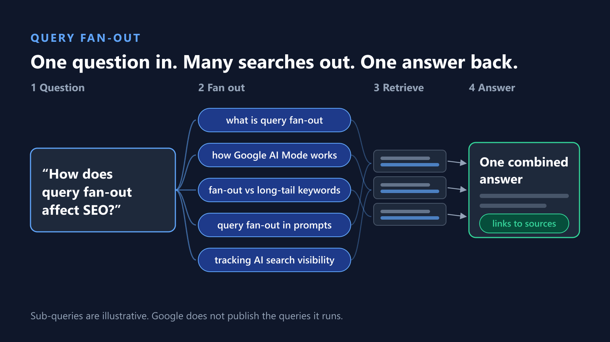
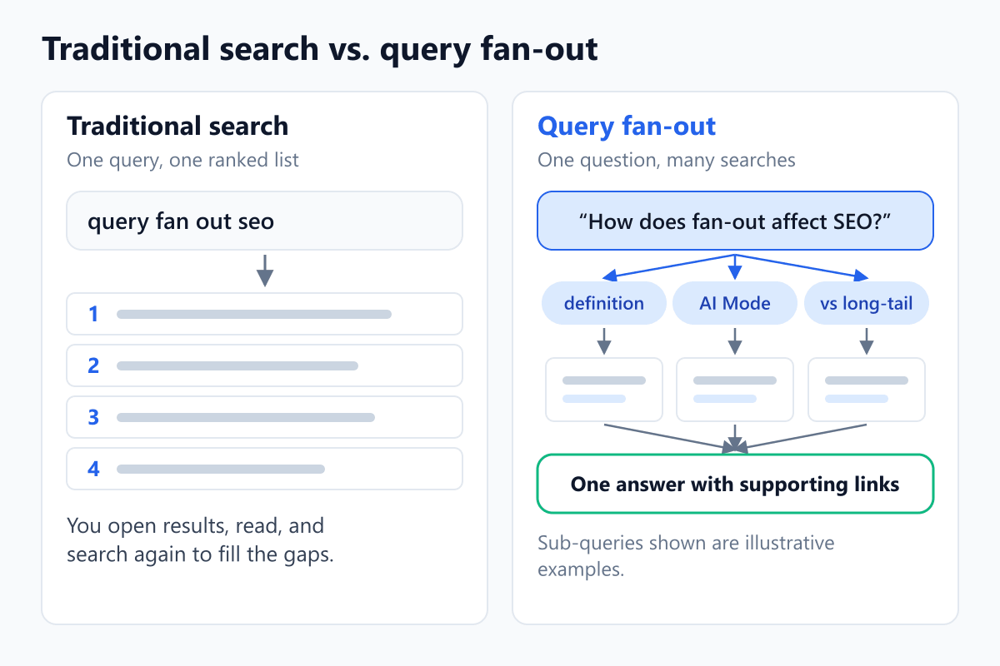
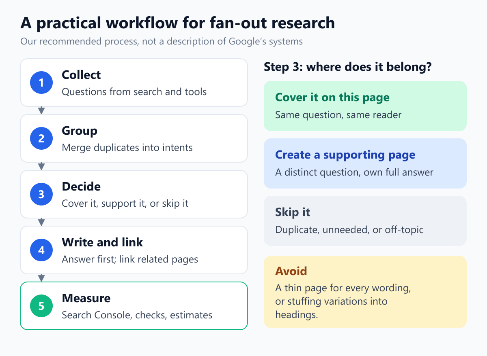

Query Fan-Out SEO: How It Works and How to Use It
Query fan-out is the technique Google uses in AI Mode to break one question into several related searches, run them at the same time, and combine what it finds into a single answer. For SEO, that shifts attention from a single keyword to the full set of questions sitting behind it.
This guide explains what query fan-out is, what Google has actually confirmed about it, and what it means for the way you research and structure content. It also includes something most guides on this topic skip: a transparent worked example using the real keyword research behind this article, from raw Semrush data to the page plan you are reading now.

What Is Query Fan-Out?
Query fan-out is a retrieval technique in which an AI search system splits a user's question into multiple sub-queries, searches for each one, and synthesizes the results into one response. Google describes it this way: AI Mode "uses our query fan-out technique, breaking down your question into subtopics and issuing a multitude of queries simultaneously on your behalf."
The practical effect is that a single question can be answered using information that would otherwise take a searcher several separate searches to find.
What does "fan out" mean?
In everyday English, to fan out means to spread outward from a single point, the way the folds of a hand fan open. Computing uses the term the same way: one input is distributed to many outputs or tasks. A "fan-out query" is one of those outputs, a sub-query generated from the original question. Query fan-out simply applies that idea to search: one question in, many searches out.
How Query Fan-Out Works in Google AI Mode and AI Overviews
At a high level, the process has four stages, shown in the diagram at the top of this article:
- Interpret: the system works out what the question is really asking.
- Fan out: it issues several related searches at once, one for each subtopic.
- Retrieve: it gathers relevant pages and passages from Google's index.
- Synthesize: it combines what it found into one answer that links to supporting pages.
What Google has confirmed
Google's own documentation and announcements confirm a small number of specific points:
- AI Mode uses query fan-out, breaking a question into subtopics and issuing many queries at once (Google, May 2025).
- Deep Search "uses the same query fan-out technique but taken to the next level" and "can issue hundreds of searches" for a single report (same announcement).
- Both AI Overviews and AI Mode "may use a 'query fan-out' technique," and this lets Google show "a wider and more diverse set of helpful links" than a classic search (Google Search Central: AI features and your website).
- There are no additional requirements or special optimizations for appearing in these features. A page must be indexed and eligible to be shown in Search with a snippet.
What Google has not disclosed
Google does not publish which sub-queries it generates for a given question, how many it runs for AI Overviews, or how it weighs the results. As Digiday reported, Google "doesn't share which queries are being processed" in a fan-out. Anything more specific, such as an exact number of sub-queries, comes from third-party testing rather than Google.
| Type of evidence | Examples in this article |
|---|---|
| Confirmed by Google | AI Mode uses query fan-out; AI Overviews may use it; no special optimization or schema is required; pages must be indexed and snippet-eligible |
| Observed by SEO practitioners | Fan-out queries are synthetic and vary between runs; tools can only approximate them; specific sub-query counts reported by vendors |
| Our own research | The keyword and question analysis in the worked example below |
| Unknown | The actual sub-queries Google runs, and exactly how sources are selected |
Query Fan-Out vs. Traditional Search, Long-Tail Keywords, and People Also Ask
The simplest way to understand query fan-out is to compare it with the search concepts SEOs already know. In a traditional search, one query produces one ranked list of pages, and the searcher does the follow-up work. With query fan-out, the system does several of those follow-up searches itself and returns one combined answer.

| Concept | Who creates the query | Visible to site owners? | How to use it for SEO |
|---|---|---|---|
| Traditional search query | The searcher | Partly, as queries in Search Console | Match the page to the query's intent |
| Long-tail keyword | The searcher, as a longer, more specific phrase | Yes, through keyword tools and Search Console | Target specific needs with focused sections or pages |
| People Also Ask | Google, from related questions people search | Yes, on the results page | A visible source of related questions to answer |
| Fan-out query | The AI system, generated in the background | No; Google does not publish them | Cover the underlying intents, not exact phrasings |
The key difference is visibility. Long-tail keywords and People Also Ask questions reflect things people actually search and can be seen. Fan-out queries are generated by the system and hidden. Semrush's guide describes them as "synthetic and probabilistic": generated on the fly, variable from run to run, and often without search volume of their own.
Query Fan-Out in SEO, in Prompts, and in SEO Tools
The term is used in three related but different ways, and our keyword research shows that searchers often mix them up (three of the eleven questions we found ask about fan-out "in SEO or prompts").
- In AI search: the retrieval technique described above, used by Google's AI Mode and AI Overviews. This is the meaning that matters most for SEO.
- In prompt engineering: developers who build their own AI applications sometimes use a similar pattern, having a model rewrite one question into several search queries so it can retrieve more relevant documents before answering. This is often called multi-query retrieval or query decomposition. It is an engineering technique, not something website owners optimize for.
- In SEO tools: AI visibility platforms track "prompts" rather than keywords, and some simulate the sub-queries an AI system might generate. These tools estimate fan-out behavior; they do not show Google's actual sub-queries.
Keeping these meanings separate avoids a common mistake: treating a tool's simulated sub-queries as if they were Google's real ones.
What Query Fan-Out Does, and Does Not, Mean for SEO
Query fan-out changes how a page might be found, not the basics of what makes a page worth finding. Google states that there are no special requirements for appearing in AI features, and that the same foundational SEO best practices apply. A page still has to be crawlable, indexed, and eligible to show a snippet, which is standard indexing and snippet eligibility work.
What it does mean, in our interpretation:
- A page can be useful for more than its main keyword. Because the system searches subtopics separately, a clear answer to one part of a larger question may be the part that gets used.
- Coverage of related intents matters more than exact wording. Since the sub-queries are hidden and variable, covering the underlying questions well is more durable than chasing specific phrases.
- Clear, self-contained sections help readers first. A section that answers its question directly is easier to scan, and easier to reuse on its own.
What it does not mean:
- It is not a named Google ranking factor, and covering more sub-topics does not guarantee rankings or AI citations.
- It does not require special markup. Google says there is no special schema.org structured data needed for AI features.
- It does not mean every related phrase needs its own page.
If you are working specifically on AI Overviews visibility, our guide on how to show up in Google AI Overviews covers that side in more detail.
How to Research Query Fan-Out Topics
You cannot see Google's fan-out queries, but you can see many of the questions people ask around a topic. Those visible signals are the most reliable starting point.
Sources you can actually see
- People Also Ask and related searches on the results page for your topic.
- Search Console queries for pages you already have, especially longer, question-style queries.
- Keyword tool variations and questions, such as the Semrush data used in the worked example below.
- Real customer questions from emails, sales calls, and support tickets.
Fan-out simulation tools, and their limits
Because Google does not share fan-out data, SEO teams have turned to other tools. Digiday reported that heads of SEO were using People Also Ask plus third-party tools such as AlsoAsked and Profound, and that iPullRank's Mike King built a tool called Qforia that generates related queries using Gemini prompts. Several keyword platforms now offer similar features.
These tools can be useful for brainstorming, but treat their output as a simulation. Semrush's own guide advises treating fan-out queries as intent signals to cover rather than exact phrases to target. We could not verify any tool's claim to show Google's actual fan-out queries, so this guide does not rely on one.
Worked Example: Researching "Query Fan Out SEO"
This article itself is the example. Here is exactly how the research for it turned into the structure you are reading.
The keyword data
We started with the keyword "query fan out seo" in Semrush's United States database on September 30, 2026. Semrush reported:
- US volume of 110 searches per month, and global volume of 210.
- A keyword difficulty of 9%.
- Informational intent.
- 58 keyword variations, with a combined US volume of 500.
- 11 questions, with a combined US volume of 630.
The variation and question totals come from separate Semrush reports, so they should not be added together. The eleven questions are the clearest view of what people are actually asking, so they drive the analysis below.
Grouping the questions by intent
Many of the eleven questions are the same question worded differently. Merging near-duplicates, such as "what is query fan out" and "what is query fan-out," reduced eleven questions to five distinct intents.
| Question | Intent | Where it is answered |
|---|---|---|
| what does fan out mean | Definition and meaning | What does "fan out" mean? |
| what is fan out query | Definition and meaning | What Is Query Fan-Out? |
| what is query fan out | Definition and meaning | What Is Query Fan-Out? |
| what is query fan-out | Definition and meaning | What Is Query Fan-Out? |
| what is query fan out in seo or prompts | SEO vs. prompts | Query Fan-Out in SEO, in Prompts, and in SEO Tools |
| what is query fan out in prompt engineering or seo | SEO vs. prompts | Query Fan-Out in SEO, in Prompts, and in SEO Tools |
| what is query fan out in prompts or seo | SEO vs. prompts | Query Fan-Out in SEO, in Prompts, and in SEO Tools |
| what is profound seo tool query fan out | A specific tool (Profound) | Fan-out simulation tools, and their limits |
| what is profound tool seo query fan out | A specific tool (Profound) | Fan-out simulation tools, and their limits |
| what is query fan out technique for seo | The technique for SEO | What Query Fan-Out Does, and Does Not, Mean for SEO |
| what is query fan out tracking in seo tools | Tracking in SEO tools | How to Measure Results, and What You Cannot Measure |

What the questions revealed
- The basics come first. Four of the eleven questions simply ask what fan-out means. That made a direct definition the first priority.
- There is real confusion about scope. Three questions ask whether fan-out belongs to SEO or to prompts. That justified a section explaining the different meanings, which few guides we reviewed address.
- Tools are part of the search journey. Two questions name a specific tool, and one asks about tracking. Those belong inside sections on research and measurement rather than on separate pages.
The resulting page plan
Each of the five intents got exactly one home in this article. Near-duplicate questions were answered once, in natural language, rather than repeated as separate headings. The brand-name tool questions were addressed in a neutral tools section instead of a dedicated page, because the useful answer is about how fan-out tools work in general, not about one product.
Turning Query Fan-Out Research Into a Page Plan
Once you have grouped the questions around a topic, each intent needs one of three decisions: cover it on the current page, give it a supporting page, or skip it.

- Cover it on the current page when it answers part of the same question for the same reader. Most related intents belong here.
- Create a supporting page when it is a distinct question that deserves a full answer of its own, and link the two pages together.
- Skip it when it is a duplicate wording, has no clear user need, or does not fit your site.
Resist the urge to create a page for every variation. Google's spam policies describe scaled content abuse as generating many pages primarily to manipulate rankings rather than to help people, including using generative AI tools to produce pages without adding value. Dozens of thin pages targeting slight rewordings of the same question is exactly the pattern to avoid.
How to Cover Related Intents Without Keyword Stuffing
Useful topical coverage answers the different things readers need to know. Keyword stuffing repeats phrases in an attempt to match searches. Google's spam policies define keyword stuffing as filling a page with keywords in an attempt to manipulate rankings, including unnatural repetition that reads awkwardly.
Our own data shows the difference clearly. Three of our questions were near-identical: "what is query fan out in seo or prompts," "…in prompt engineering or seo," and "…in prompts or seo."
- Weaker approach: three separate headings, each repeating one of those phrasings, with three versions of the same answer.
- Better approach: one section that explains the real confusion behind all three, the difference between fan-out in AI search, in prompt engineering, and in SEO tools, written for a person rather than for a phrase.
Good on-page structure supports this: descriptive headings that reflect real questions, a direct answer at the start of each section, and supporting detail underneath. Google also states that it has no preferred word count, so coverage should be driven by what readers need, not by length.
Query Fan-Out, Topic Clusters, and Internal Linking
No single page should try to cover everything. When research surfaces intents that deserve their own pages, a topic cluster connects them: a central page covers the core topic, supporting pages go deeper on distinct subtopics, and internal links make the relationship clear to readers and search engines.
The same grouping process used in keyword research applies here. If you are new to it, our guide to keyword clustering and intent explains how to group related terms and decide which belong together on one page.
Link between cluster pages where it genuinely helps the reader move to the next question, using descriptive anchor text rather than repeated exact-match phrases.
How to Measure Results, and What You Cannot Measure
Measuring anything related to query fan-out comes with a hard limit: the sub-queries themselves are not reported anywhere by Google.
- Search Console includes AI features, but does not separate them. Google states that appearances in AI Overviews and AI Mode are included in the overall search traffic in Search Console, within the "Web" search type. You cannot filter to AI features alone.
- Watch the broader query mix for a page. Growth in impressions for longer, question-style queries can indicate that a page is covering more of its topic. It does not prove anything about fan-out specifically.
- Check manually, and record the date. Searching your target questions yourself shows what appears today, but results vary by user, location, and time.
- Treat third-party AI visibility data as estimates. Prompt-tracking tools measure the prompts you choose to track on the platforms they monitor. They are useful for spotting trends, not for confirming what Google did.
If you are reviewing an existing site, an SEO audit is a practical way to check which pages already answer related questions well and which need work.
Limitations and Open Questions
It is worth being clear about what nobody outside Google can currently know:
- Which sub-queries Google runs for a given question, and how many.
- How Google weighs one source against another when it synthesizes an answer.
- How consistent fan-out is between repeated searches. SEO vendors report that it varies, but their figures come from their own testing.
- Whether other AI assistants work the same way. "Query fan-out" is Google's term; the industry applies it loosely to similar processes in other systems, which may differ.
Google also states that it does not guarantee it will crawl, index, or serve any page, even when a page follows its guidance. Query fan-out does not change that.
Common Query Fan-Out SEO Mistakes
- Creating a page for every variation. This produces thin, overlapping pages and risks the scaled content pattern Google's spam policies describe.
- Stuffing variations into headings. Repeating near-identical phrasings makes a page worse to read without adding information.
- Treating simulated sub-queries as Google's real ones. Tool output is an approximation. Use it to find intents, not to set exact targets.
- Adding FAQ markup expecting AI or rich-result benefits. Google says no special schema is needed for AI features, and it stopped showing FAQ rich results in Google Search in May 2026. A visible FAQ can still help readers.
- Trusting vendor statistics as universal facts. Figures about sub-query counts or citation rates come from individual companies' own testing and may not apply to your site.
- Ignoring the basics. A page that is not indexed, or not allowed to show a snippet, cannot be used in AI features at all.
Frequently Asked Questions
Is query fan-out a Google ranking factor?
Google describes query fan-out as a technique its AI features use to find information. It does not list it as a ranking factor, and it has said there are no special requirements or optimizations for appearing in AI features beyond standard SEO best practices.
Does Search Console show fan-out queries?
No. Google includes AI Overviews and AI Mode appearances in Search Console's overall Web data, but it does not report the sub-queries it generates.
Do I need schema or FAQ markup for AI Mode?
No. Google states that there is no special schema.org structured data needed to appear in AI features. Accurate structured data can still help Google understand a page, but it is not a requirement, and FAQ rich results are no longer shown in Google Search.
Does query fan-out apply to ChatGPT?
The term comes from Google, but the SEO industry uses it for similar processes in other AI assistants that search the web before answering. Those systems are built differently, so do not assume they behave identically to Google's.
Should I create a page for every fan-out query?
No. Most related intents belong as sections on an existing page. Create a separate page only when an intent is distinct enough to deserve a full answer of its own, and avoid producing many thin pages for slight rewordings.
Can SEO tools show Google's real fan-out queries?
Google does not publish its fan-out queries, so we could not verify any tool's claim to show them. Treat tool output as a simulation that helps you find related intents.
Key Takeaways
- Query fan-out is Google's technique for splitting one question into many searches and combining the results into one answer.
- Google confirms it is used in AI Mode and may be used in AI Overviews, but does not publish the sub-queries it runs.
- There is no special optimization for it. Indexing, snippet eligibility, and genuinely useful content remain the foundation.
- Research the questions people visibly ask, group them by intent, and give each intent one clear home.
- Cover related intents naturally; avoid thin pages for every variation and repeated phrasing in headings.
- Measure with care: Search Console includes AI features but does not separate them, and third-party data is an estimate.
Want help planning content around related intents? Get in touch.
Sources in this article were checked on September 30, 2026. Google's AI search features change often, so treat specific details as current to that date.